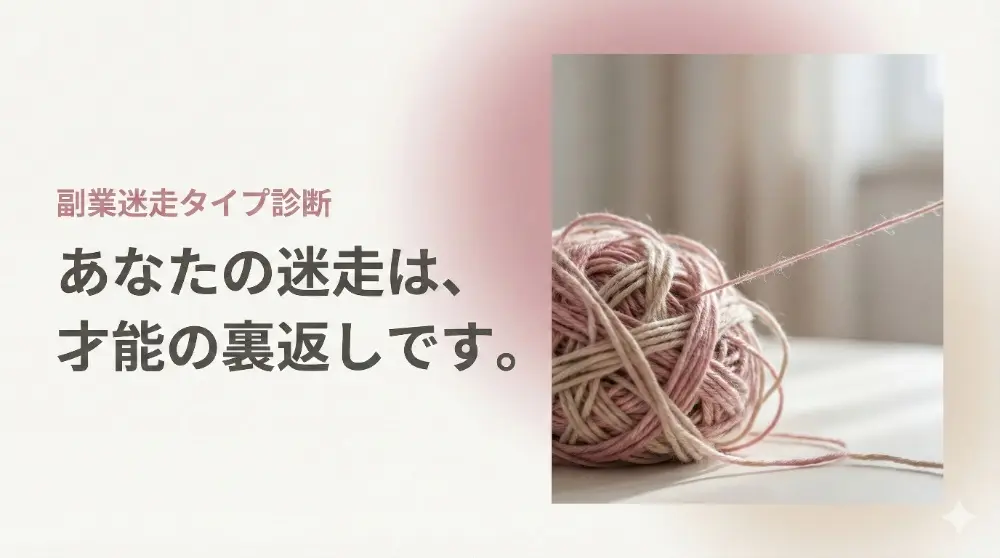
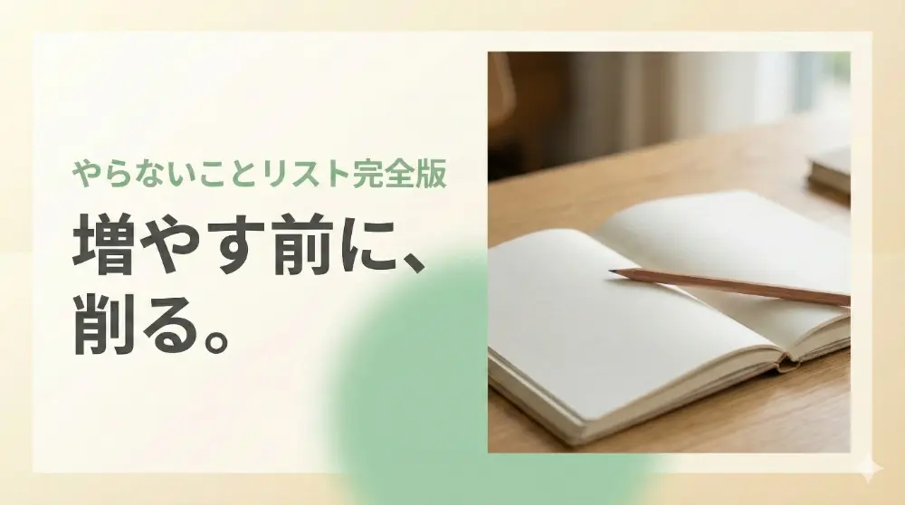
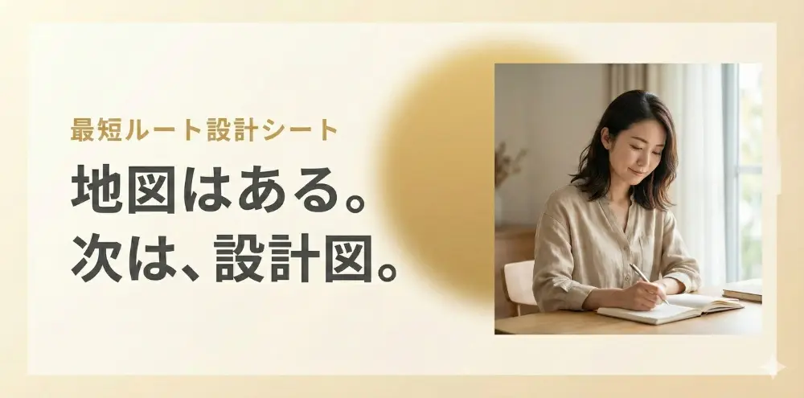

学びすぎて動けないHSS型HSPへ。
あなたの才能を「迷走」から
「確信」に変える 3つの「地図」を
無料公開しています。

「なぜ私は続かないの？」その不安の正体を5つのパターンで解説。
「自分の努力不足じゃなかったんだ」と、まずは自分を許すことから始めましょう。


CREATED BY
これらの資料が同じ気質を持つあなたの安心と
「前進」のきっかけになれば幸いです。
内容が役に立ったら、ぜひSNSなどで
感想を教えてくださいね。
© 2026 Risa. All Rights Reserved.